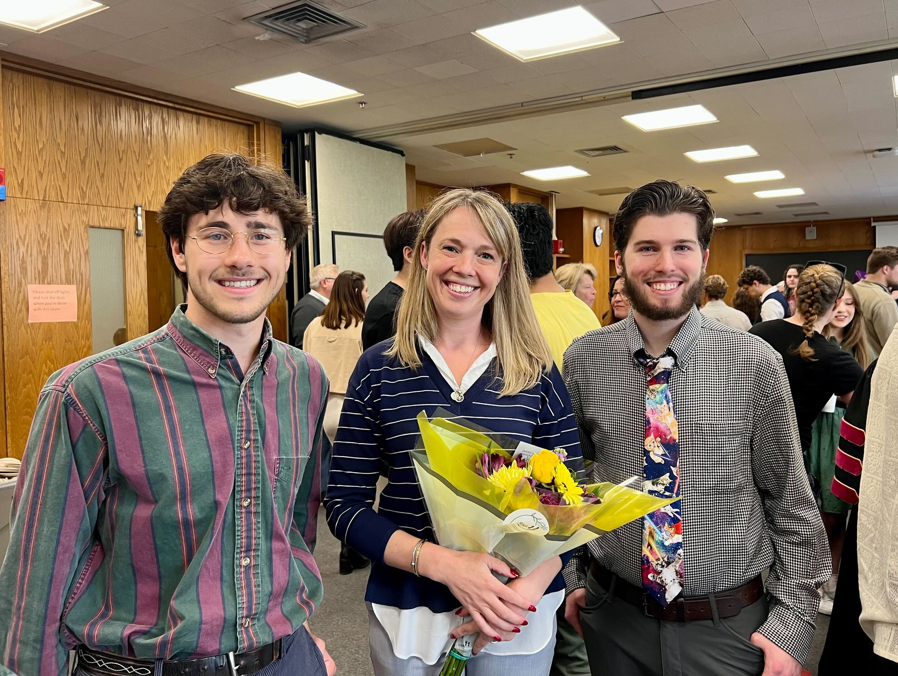

Seamus McNulty and Zachary Webb Win Departmental Awards

Seamus McNulty and Zachary Webb, both long-time members of the research group, were awarded two prestigious awards: the 2023-2024 Astronomy Award for Academic Excellence (Seamus) and the 2023-2024 Outstanding Astronomy Senior Award (Zach). Our group is so proud of their accomplishments, as both of these early career scientists are richly deserving of these accolades.
The Astronomy Award for Academic Excellence is awarded to a graduating undergraduate student who has achieved outstanding academic performance, through excellent GPA. Congratulations, Seamus!
The Outstanding Astronomy Senior Award is awarded to graduating undergraduate students who have demonstrated outstanding performance across the multiple dimensions of academics, research, and community engagement. Congratulations, Zach!